Ana Elisa —
Uma jovem encantada pelo desenvolvimento web.
Este é meu espaço criativo.
Neste momento, estou ocupando meu tempo livre desenvolvendo páginas web, com maior foco no design do que na programação. Contudo, estou empenhada em ampliar meu conhecimento em backend e venho dedicando tempo aos estudos para alcançar esse objetivo.
No início da minha adolescência, descobri minha paixão pelo desenvolvimento web e tenho me dedicado intensamente aos estudos para alcançar minhas metas nessa área.
Desenvolvi minhas habilidades de forma autodidata e, ao longo do tempo, isso permaneceu como apenas um hobby. No entanto, agora estou buscando minha primeira oportunidade na área, com o intuito de expandir ainda mais meus conhecimentos.
No princípio, concentrei-me no desenvolvimento de programas em Python, mas com o passar do tempo, minha paixão pelo design web se tornou evidente, abrindo uma nova rota que me trouxe até minha posição atual.
Sou aluna do ensino médio e estou também envolvida no curso de formação de docentes. Em algumas ocasiões, recebi destaque por minha proficiência na escrita de redações, assim como por minha dedicação aos estudos.
Com o passar do tempo, observei uma evolução notável em meus projetos, tanto em termos de design quanto de responsividade da página.
Atualmente, consolidaram-se minhas habilidades no campo do design, evidenciando um refinamento substancial e uma maior capacidade de adaptação às diversas exigências do meio digital.
Aqui estão alguns dos meus projetos:
Redesign da A3 operadora (site não oficial)
Ebooks
Editor de imagem
Blog sobre arte

Player de música
Meu interesse por novos conhecimentos e experiências é evidente, embora eu reconheça que minhas habilidades ainda estão em desenvolvimento. Estou sempre à procura de novas descobertas e minha ambição me impulsiona a explorar diferentes áreas de aprendizado.